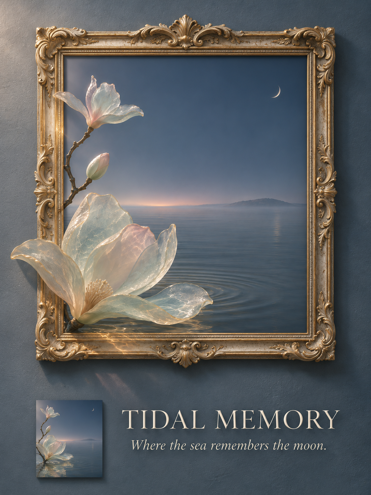

先生成海玻璃玉兰与月海，再把同一场景编辑成出框海报。

打开媒体文件 · 下载源码与提示词 · 来源与验证
ChatGPT 图像生成与编辑
已核对媒体文件 SHA-256；主要保留主体关系，但不是像素级保真编辑。 现有 1086 × 1448 像素不应称为大幅印刷母版。
本次作品公开展示；不新增源码或媒体复用许可。参考资料与随包字体等第三方组件保留各自声明。AI 输出不构成独创性或版权的法律保证。